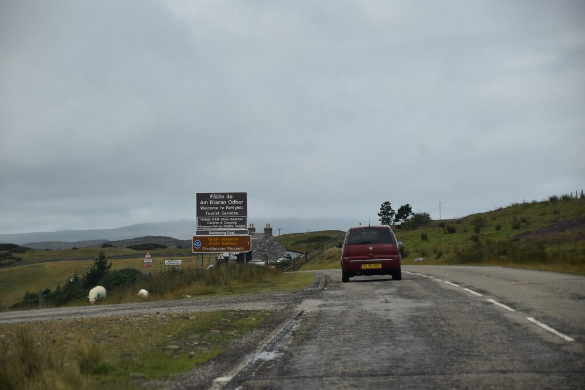

영국 스코틀랜드 베티힐 48MW 풍력단지 새 주인 나다라, 주민 지분 최대 20% 참여 기회 약속 이어받아

개발사 에덴 리뉴어블스가 마련한 공동체 이익 패키지 승계…파 노스 공동체 개발신탁 통한 지분 참여·지역 전기요금 할인·학교 교육 프로그램, 2027년 초 착공·2028년 말 가동 예정
영국 스코틀랜드 북부 서덜랜드의 베티힐 인근에 들어설 48MW 규모 베티힐 풍력단지 2단계를 유럽과 미국에서 사업하는 독립 발전사업자 나다라(Nadara)가 개발사 에덴 리뉴어블스(Eden Renewables)로부터 넘겨받으면서, 에덴이 지역에 약속한 공동체 이익 패키지를 그대로 지키기로 했다. 패키지의 중심은 지역 공동체가 2단계 사업 지분을 최대 20%까지 소유할 수 있는 기회로, 지분 참여는 주민 조직인 파 노스 공동체 개발신탁(Farr North Community Development Trust)을 통해 운영된다. 여기에 지역 전기요금 할인 제도와 베티힐·멜비치·텅 초등학교, 파 고등학교를 대상으로 한 학교·교육 프로그램도 들어 있으며, 지분 가격과 할인 폭, 인수 금액은 공개되지 않았다. 터빈 10기(날개 끝 최고 높이 149.9m)로 이뤄진 단지는 2024년 2월 하일랜드 의회의 계획 허가를 받았고, 2027년 초 공사를 시작해 2028년 말 가동한 뒤 35년 동안 운영될 예정이며, 계통은 32km 연결선 대부분을 A836 도로 갓길 아래에 묻어 둔레이 변전소에 잇는다. 이번 사업은 베티힐 남동쪽 약 2km, 스켈픽 영지에 속한 베티힐 공동 방목지에 서 있는 기존 터빈 2기를 넓히는 것이다. 에덴 쪽은 나다라와 지역 참여·이익·공동 소유에 대해 "같은 가치와 약속을 공유한다"고 밝혔고, 나다라 쪽은 함께 일하는 지역과 단단히 연결된 사업을 계속하겠다고 말했다.
시민에너지 관점
허가를 받은 풍력 사업이 착공 전에 다른 회사로 넘어가도 주민 지분 참여 기회, 전기요금 할인, 학교 교육 프로그램이라는 약속이 사업에 붙어 함께 넘어갔다는 점이 이번 거래의 핵심이다. 지분은 아직 '기회'일 뿐이고 가격도 할인 폭도 정해지지 않아 공수표가 될 수 있다는 걱정이 나올 수 있지만, 그래서 더욱 약속을 받아 줄 주민 조직이 미리 서 있어야 한다. 베티힐처럼 주민 개발신탁이 지분 창구로 정해져 있으면 주인이 바뀌어도 약속을 따질 상대가 지역 안에 남고, 35년 운영 기간 동안 배당과 결정권이 지역에 머문다. 국내에서도 발전사업 허가가 양도될 때 주민참여 약속이 허가 조건과 함께 넘어가도록 묶고, 마을이 지분을 받을 법인을 사업 초기에 세워 두어야 한다.
출처: Northern Times 2026-10-28 John Davidson 원문 보기
英スコットランド・ベティヒルの48MW風力発電所、新オーナーのナダラが住民の最大20%出資機会の約束を引き継ぐ
開発会社エデン・リニューアブルズが用意した地域便益パッケージを継承…ファー・ノース地域開発トラストを通じた出資参加・地域電気料金割引・学校教育プログラム、2027年初め着工・2028年末稼働予定
英スコットランド北部サザーランドのベティヒル近郊に建設される出力48MWのベティヒル風力発電所第2期を、欧州と米国で事業を展開する独立系発電事業者ナダラ（Nadara）が開発会社エデン・リニューアブルズ（Eden Renewables）から引き継ぎ、エデンが地域に約束していた地域便益パッケージをそのまま守ることになった。パッケージの柱は、地域コミュニティが第2期事業の持ち分を最大20%まで所有できる機会で、出資参加は住民組織のファー・ノース地域開発トラスト（Farr North Community Development Trust）を通じて運営される。このほか地域の電気料金割引制度と、ベティヒル・メルビッチ・タングの各小学校とファー高校を対象とした学校・教育プログラムも含まれるが、持ち分の価格や割引幅、買収額は公表されていない。風車10基（ブレード先端の最高高さ149.9m）からなる発電所は2024年2月にハイランド議会の計画許可を受けており、2027年初めに着工して2028年末に稼働し、35年間運転する予定で、系統は32kmの連系線の大部分をA836道路の路肩の地下に埋設してドゥンレイ変電所につなぐ。今回の事業は、ベティヒルの南東約2km、スケルピック・エステートに属するベティヒル共同放牧地に立つ既存の風車2基を拡張するものだ。エデン側はナダラと地域参加・便益・共同所有について「同じ価値観と約束を共有している」と述べ、ナダラ側は共に働く地域としっかり結びついた事業を続けると語った。
市民エネルギーの視点
許可を得た風力事業が着工前に別の会社に渡っても、住民の出資参加機会、電気料金割引、学校教育プログラムという約束が事業に付いたまま引き継がれたことが、今回の取引の核心だ。持ち分はまだ「機会」にすぎず、価格も割引幅も決まっていないため空手形になりかねないとの懸念もありうるが、だからこそ約束を受け止める住民組織があらかじめ立っていなければならない。ベティヒルのように住民の開発トラストが出資の窓口に定められていれば、所有者が代わっても約束を問いただす相手が地域の中に残り、35年の運転期間を通じて配当と決定権が地域にとどまる。韓国でも発電事業許可が譲渡される際に住民参加の約束が許可条件と一緒に引き継がれるよう縛り、集落が持ち分を受け取る法人を事業の初期段階で設けておくべきだ。
出典: Northern Times 2026-10-28 ジョン・デイビッドソン（John Davidson） 原文を読む
英国苏格兰贝蒂希尔48MW风电场新东家纳达拉承接"居民最多持股20%"的参股机会承诺
继承开发商伊登可再生能源制定的社区利益方案…通过法尔北社区发展信托参股、地方电费折扣、学校教育项目，计划2027年初开工、2028年底投运
在欧洲和美国开展业务的独立发电商纳达拉（Nadara）从开发商伊登可再生能源（Eden Renewables）手中接下将建在英国苏格兰北部萨瑟兰贝蒂希尔附近、装机48MW的贝蒂希尔风电场二期项目，并决定原样履行伊登向当地承诺的社区利益方案。方案的核心是让当地社区有机会持有二期项目最多20%的股份，参股通过居民组织法尔北社区发展信托（Farr North Community Development Trust）运作。方案还包括地方电费折扣制度，以及面向贝蒂希尔、梅尔维奇、坦格三所小学和法尔高中的学校教育项目，但股份价格、折扣幅度和收购金额均未公开。风电场由10台风机组成（叶尖最高149.9米），已于2024年2月获得高地议会规划许可，计划2027年初开工、2028年底投运，预计运营35年；并网线路全长32公里，大部分沿A836公路路肩埋入地下，接入敦雷变电站。该项目是对位于贝蒂希尔东南约2公里、属于斯凯尔皮克庄园的贝蒂希尔公共牧场上现有2台风机的扩建。伊登方面表示与纳达拉在社区参与、利益和共同所有方面"拥有相同的价值观和承诺"，纳达拉方面则表示将继续开展与当地社区紧密相连的项目。
市民能源视角
已获许可的风电项目在开工前转手给另一家公司，居民参股机会、电费折扣和学校教育项目这些承诺却随项目一并转移，这是此次交易的关键。股份目前还只是"机会"，价格和折扣幅度都未确定，有人会担心变成空头支票，但正因如此，才更需要事先有能接住承诺的居民组织。像贝蒂希尔这样由居民发展信托担任参股窗口，即使东家更换，追问承诺的一方仍留在当地，35年运营期内的分红和决策权也都留在地方。韩国也应规定发电业务许可转让时，居民参与承诺必须与许可条件一并转移，并在项目初期就设立由村庄承接股份的法人。
来源: Northern Times 2026-10-28 John Davidson 查看原文
New owner Nadara takes on promise of up to 20% community ownership at 48MW Bettyhill wind farm in Scotland
Community benefits package drawn up by developer Eden Renewables carries over, with a share offer through Farr North Community Development Trust, a local electricity discount and a schools programme; construction due early 2027, operation by end of 2028
Nadara, an independent power producer operating in Europe and the US, has taken over the 48MW Bettyhill Wind Farm Phase 2 near Bettyhill in Sutherland, northern Scotland, from developer Eden Renewables and has committed to keeping the community benefits package Eden promised local people. At its centre is an opportunity for the local community to own up to 20% of Phase 2, run through the residents' body Farr North Community Development Trust. The package also includes a local electricity discount scheme and a school and education programme for Bettyhill, Melvich and Tongue primary schools and Farr High School, although the share price, the size of the discount and the purchase price have not been disclosed. The 10-turbine scheme, with a maximum blade-tip height of 149.9m, received planning permission from Highland Council in February 2024; work is due to start early in 2027, with operation by the end of 2028 and an expected life of 35 years, and a 32km grid connection will run underground, mostly along the verge of the A836, to Dounreay substation. The project extends two existing turbines on Bettyhill Common Grazings, part of Skelpick Estate, about 2km south-east of Bettyhill. Eden said it and Nadara "share the same values and commitments" on community engagement, benefits and shared ownership, while Nadara said it would keep building projects with a strong connection to the communities it works with.
Citizen Energy View
The key point of this deal is that when a consented wind project changed hands before construction, the promises of a community share opportunity, cheaper electricity and a schools programme stayed attached to the project and moved with it. Some will worry that the stake is still only an "opportunity", with no price or discount yet fixed, and could prove an empty promise, but that is exactly why a residents' body needs to be in place to hold the developer to it. Where, as in Bettyhill, a community development trust is named as the vehicle for the share, someone inside the community can still press the case whoever owns the project, and dividends and a say in decisions stay local over a 35-year life. Korea should likewise tie community participation pledges to generation licences so they transfer when a licence is sold, and villages should set up the bodies that will hold their stakes at the very start of a project.
Source: Northern Times 2026-10-28 John Davidson Read the original